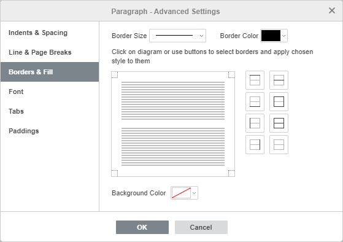
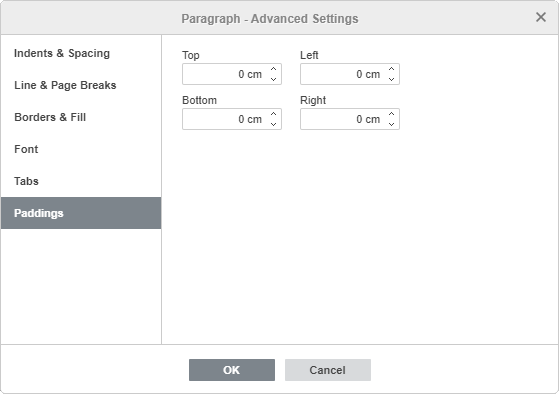

Dodavanje okvira
Da biste dodali okvire pasusu, stranici ili celom dokumentu u Document Editor-u,
- postavite kursor u odgovarajući pasus, ili odaberite više pasusa mišem ili ceo tekst kombinacijom tastera Ctrl+A,
- kliknite desnim tasterom miša i izaberite opciju Napredna podešavanja pasusa iz menija, ili koristite link Prikaži napredna podešavanja na desnom panelu,
- prebacite se na karticu Okviri i popuna u otvorenom prozoru Pasus - Napredna podešavanja,
- podesite potrebnu vrednost za Veličina okvira i odaberite Boju okvira,
- kliknite unutar dostupnog dijagrama ili koristite dugmad za izbor okvira i primenu odabranog stila na njih,
- kliknite na dugme OK.

Nakon dodavanja okvira, možete podesiti i razmake, tj. udaljenosti između desnog, levog, gornjeg i donjeg okvira i pasusa.
Da biste podesili potrebne vrednosti, prebacite se na karticu Razmaci u prozoru Pasus - Napredna podešavanja:
